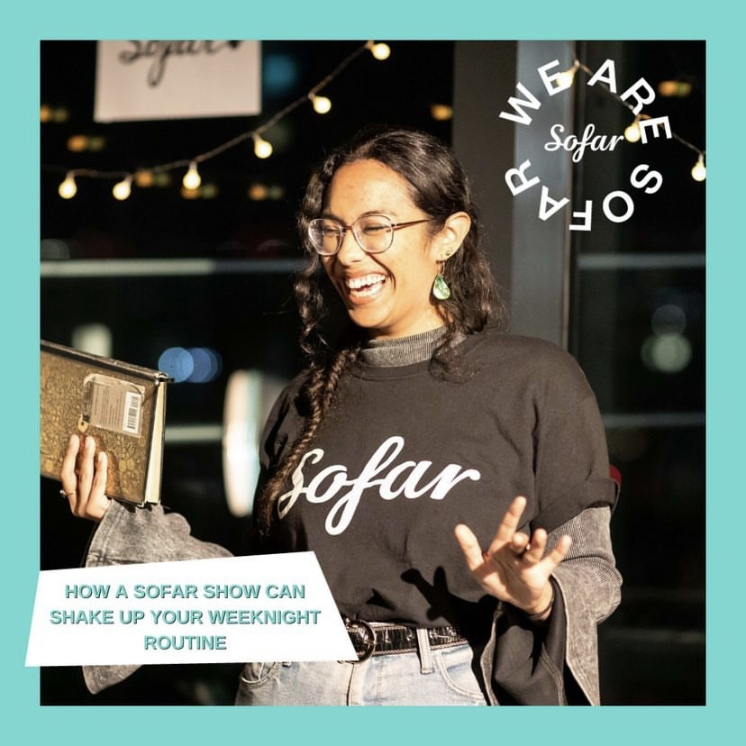

Hi there! I'm Safiyyah, an interdisciplinary researcher and creative practitioner interested in understanding how people experience and find meaning through art, music and culture. My academic work explores the relationship between human cognition and aesthetic experiences, with a particular focus on how music shapes autobiographical memory. I am trained in music psychology and neuroaesthetics, and also work collaboratively with researchers across computing, virtual reality and museum studies.
My research approach incorporates methodologies from across disciplines including neuroimaging, virtual reality, behavioural experimentation, signal processing, natural language processing and experience sampling. I am a keen advocate for open science and decolonial approaches to research, which shape my perspective as a researcher.
Alongside my academic work, I have worked in live event and cultural settings as a
MC for Sofar Sounds

I am deeply passionate about facilitating robust, accessible and socially meaningful research, and I welcome opportunities for collaboration, public engagement, creative projects, speaking engagements and interdisciplinary partnerships.